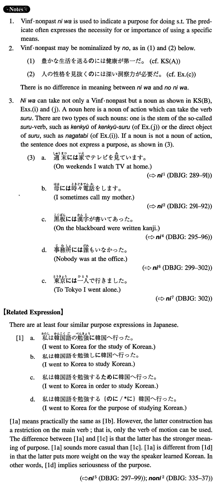

には (I. 289)
- (ksa).
- 豊かな生活を送るには健康が第一だ。
- In order to lead a rich life, health should be your primary concern.
- (ksb).
- ハイヒールはハイキングには不向きだ。
- High-heeled shoes are unsuitable for hiking.
- (a).
- 日本を知るには日本語を学ぶのが一番だ。
- The best course for getting to know Japan is to study the Japanese language.
- (b).
- 人生を豊かにするには趣味を沢山持つことが大事だ。
- To enrich your life it is important is to have many hobbies.
- (c).
- 人の性格を見抜くには深い洞察力が必要だ。
- In order to see through a person's personality, one needs to have deep insight.
- (d).
- 外国語の能力を伸ばすにはその国に行くのが一番だろう。
- The best way for developing one's proficiency in a foreign language would be to go to the country of that language.
- (e).
- 世界の平和を維持するにはエリートの交流より庶民のレベルの交流が肝心だ。
- To maintain world peace, exchange among the general public rather than exchange among elites is essential.
- (f).
- 期末レポートを書くにはワープロが欠かせない。
- A word processor is a must for writing a term paper.
- (g).
- あの人を説得するには時間がかかる。
- It takes time to persuade him.
- (h).
- このクラブの会員になるには会員の推薦状が必要だった。
- In order to become a member of this club a member's letter of recommendation was necessary.
- (i).
- この鞄は長旅には便利だ。
- This bag is suitable for a long travel.
- (j).
- この研究にはかなりの時間とお金がかかる。
- This research needs a considerable amount of time and money.
